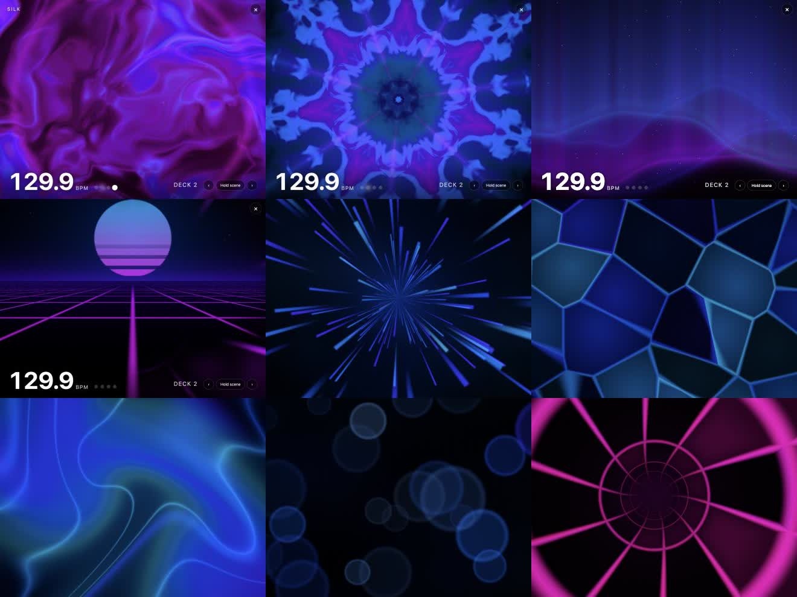

Why it's tight
It knows the beat before you hear it.
Apps that listen through a microphone hear the kick, work out that it was a kick, and then tell the lights. They are always late. Your decks already broadcast every beat over their link network, with the tempo and the place in the bar. Night Owl listens to that, knows exactly when the next beat lands, and cues the lights a touch early so the light arrives with the sound.
What it does
A light show that plays along.
A row of lights on the same simulated beat. In your room, the order comes from where each light really is.
Beat-locked lights
Every beat, with the downbeat hitting harder. It keeps time through lost packets, tempo changes and jog nudges.
Effects that know your room
Waves, chases and sweeps run across your lights' real positions, taken from your Hue Entertainment area. Left to right, back to front, or outward from the DJ booth.
Build-ups and hits
The last bar before a change rolls twice, then four times as fast, brightening toward white. The next downbeat lands as a hit across the whole room.
Presets
Switch the whole look from one menu. Eight harmonious looks to start, and save, rename and delete your own.
A visualizer for the big screen
Twelve full-screen scenes in the lights' colours, moving on the same beat. Open it on a TV or projector from any browser on your network.
Track awareness, if you want it
Optionally joins the DJ network to follow the leading deck through a blend and to land changes on a track's phrases: intro, verse, chorus.
Run it from your phone
A control page for any phone or computer on the network, with a live map of the room. Every change applies at once.
More than ten lights
A Hue area holds ten. Add more areas and Night Owl treats them as one room: one streamed on every beat, the rest taking the colours and their turn to flash.
Leave it running
One small program for Windows, macOS and Linux. Install it as a service on an always-on machine and it is there whenever the decks are.
How it works
It listens. It counts. It leads.
Your decks
Pioneer players broadcast a packet on every beat over PRO DJ LINK, with the tempo and the position in the bar. The mixer says which channels are live. Night Owl only listens.
Night Owl
Keeps a steady beat clock that shrugs off late and lost packets, picks the deck that is live, and works out each light's colour 50 times a second, shifted early by your light lead.
Your lights
Colours stream to the Hue bridge over its low-latency Entertainment connection, and to any browser showing the visualizer.
What you need
Decks, lights, and something to run it on.
DJ gear
- Pioneer DJ players with a LINK port. Built and tested with CDJ-2000NXS2s and a DJM-900NXS2.
- A network switch and a cable from each player.
- Tracks analysed in rekordbox.
Lights
- A Philips Hue Bridge and colour-capable Hue lights.
- A Hue Entertainment area with each light dragged to where it really is. That is how Night Owl learns your room.
A computer
- Windows, macOS or Linux, on the same network.
- On a network cable if you can: it is the difference between 3 ms and 200 ms of wobble.
- Go, to build it.
Get started
Four steps to the first beat.
Wire the decks to your network
Each player's LINK port to a switch, and the switch to your router. Turn the decks on after the cable is in.
Lay out your room in the Hue app
Create an Entertainment area of the music type, add your lights, and drag each one to its real position and height. The effects, the colour spread and the room map all work from this.
Build it
The program is a single file called cdjhue.
git clone https://github.com/evands/night-owl
cd night-owl
go build -o cdjhue .Run it and press the bridge button
The first run asks you to press the button on your Hue bridge. After that it starts straight away, takes the lights, and opens the control page. Pick a look and tune the light lead until the lights sit on the kick.
./cdjhueThe README has the full guide: each operating system, the always-on server, more than ten lights, and what to check when something is off.
The visualizer
Twelve scenes, one beat.
Silk, Tunnel, Kaleidoscope, Aurora, Horizon, Bokeh, Warp, Glass, Liquid, Prism, Ribbons and Hive. Each takes the lights' colours, and no two appearances are quite the same.
